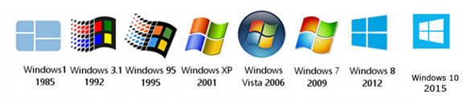

Početne verzije Windows operacijskih sustava nisu pružale mnogo mogućnosti u radu. Operacijski sustav koji je predstavljao veći pomak u samom njihovom razvoju je bio Windows 95. U tu verziju dodana je podrška za 32-bitne programe, „plug and play“ uređaje, imena datoteka do 255 znakova, povećana sigurnost i poboljšane performanse. (Fried 2010.)
Drugi veći pomak u Windows operacijskim sustavima bio je Windows XP koji je imao poboljšano korisničko sučelje, ugrađen Windows Explorer koji kontrolira cijeli datotečni sustav računala, web pretraživač Internet Explorer 6, potporu za daljinsko upravljanje, .NET Passport servis koji je služio za registraciju i korištenje MSN usluga. (Lake 2002.)
Windows Vista, sljedeći po redu u nizu Windows operacijskih sustava, također je imao poboljšano korisničko sučelje, sigurnost, umrežavanje, te upravljanje i administraciju.
Windows 7 dobio je ažurirano korisničko sučelje s multi-touch podrškom, ažuriranu programsku traku, sustav kućnog umrežavanja nazvan HomeGroup, poboljšane performanse i fokus na kompatibilnosti sa svim programima. (Nash 2008.)
Windows 8 i 8.1 imali su uvelike promijenjen način prikaza i kontrole nad korisničkim sučeljem, koje je zbog porasta prodaje dodirnih uređaja, bilo optimizirano kao operacijski sustav za takve uređaje, povećana je integracija takozvanih „cloud“ servisa radi sigurnijeg očuvanja podataka, uklonjen je Start Menu i dodan Windows Store koji omogućava instaliranje aplikacija inače nekompatibilnih za starije verzije Windows-a. (Microsoft 2012.)
Windows 10, najnovija Microsoft-ova nadogradnja, na tržištu je od 2015. godine. Sadrži brojne karakteristike i poboljšanja u usporedbi s prethodnicima kao što je vraćanje Start Menu lokacije ali ovaj put s mogućim dodavanjem više kartica. Windows 10 ima ugrađenu funkciju virtualnog desktop sustava i „Pronađi moj uređaj“. Također sadrži noviju verziju web pretraživača pod nazivom Edge i digitalnu pomoćnicu Cortanu koja uvelike olakšava rad na računalu i pretraživanje podataka. Njegovo korisničko sučelje je prilagodljivo što znači da mijenja svoje postavke i izgled ovisno o uređaju na kojem se koristi.
